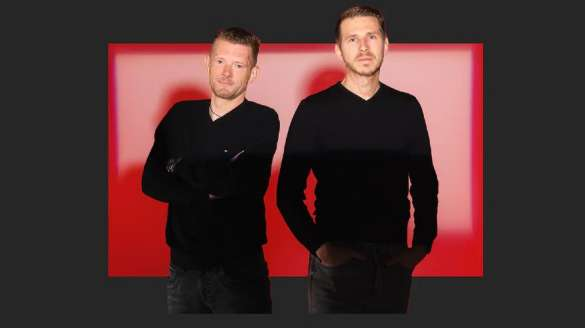
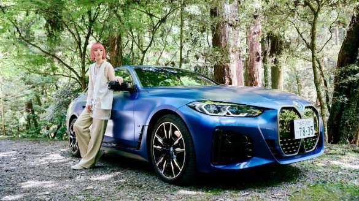
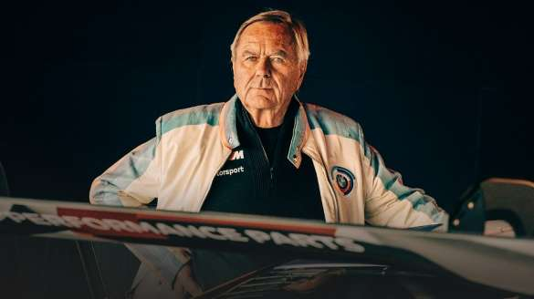

BMW TEHNOLOGIJA BUDUĆNOSTI
Tehnološka otkrića idu ruku pod ruku sa novim doživljajima za vozače i suvozače, a digitalne tehnologije su sada sastavni deo našeg svakodnevnog života i imaće još veću ulogu u automobilima budućnosti. BMW ne samo što želi da bude deo ovog razvoja – on želi da ga povede napred.
BMW prepoznaje tehničke prilike i izazove i koristi inovativni duh za razvoj rešenja koja pomažu u oblikovanju budućnosti mobilnosti. Dr. Paskal Tisen i Sebastijan Sajpel doveli su zabavu na zadnja sedišta do potpuno nove dimenzije pomoću BMW bioskopskog ekrana za BMW serije 7.

VIRTUELNA IMA VOZI BMW I4 M50
Umetnik koji stvara remek-dela od stakla, Keniči Sasakava, rođen je 1981. godine u prefekturi Kanagava, delu Šire tokijske oblasti. Diplomirao je na Univerzitetu umetnosti Tama, gde je studirao na odeljenju za keramiku, staklo i metal i specijalizovao se za staklo. Posle postdiplomskih studija na istom univerzitetu, bio je šegrt u radionici Utacujama u Kanazavi (Kanazawa Utatsuyama Kogei Kobo), specijalizovanoj za rukotvorine. Trenutno radi u japanskom gradu Kjotu.
Ova neuobičajena ekskurzija kroz Japan vodi Imu od Kjota do Nare, grada lociranog na sat vožnje prema jugu. Njeno odredište: studio umetnika i majstora za staklo Keničija Sasakave. Ali ko je tačno Ima – i zašto se to istinska inovacija dešava u modelu BMW i4 M50.

BMW M LEGENDA: JOHEN NERPAŠ – INSPIRATIVNI MENTOR
Priča o uspehu BMW odeljenja, koje ove godine slavi pet decenija postojanja, verovatno ne bi bila ista i toliko posebna bez jednog čoveka – Johena Nerpaša.
Imali smo priliku da razgovaramo sa nekadašnjem generalnim direktorom kompanije BMW M na ovogodišnoj 24-satnoj trci u Nirburgringu i to o sportskim automobilima, trkama i njihovoj budućnosti, ali i o juniorskom timu.